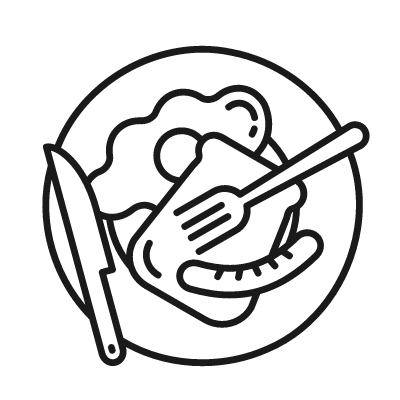

WATER FOOTPRINTReduce Water
생활 속 작은 실천으로 내가 남긴 발자국을 지워요. 내가 매일 실천 할 수 있는 항목 5개를 선택해 #물 발자국 챌린지에 참여해보세요. 당신의 작은 노력들이 모여 지구의 발자국을 지울 수 있습니다.
#1.샤워시간 1분 줄이기
#2.양치 컵 사용하기
#3.절수형 샤워헤드 사용
#4.물탱크에 물 통 넣기

#5.바구니에 넣어 세척하기
#6.수도꼭지 샤워기 모드 사용

#7.물 받아놓고 설거지하기
#8.세탁기 헹굼 수 지키기
#9.일주일에 1번 채식 DAY!
#10.빨래는 모아서 한 번에
#11.음식물 먼저 닦기
